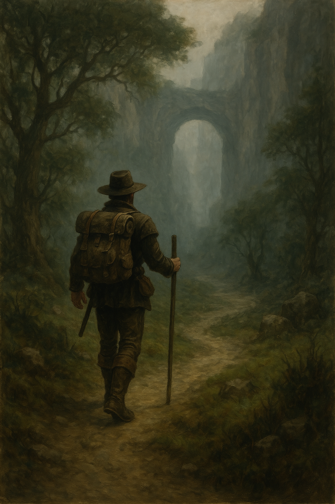

Em uma movimentada cidade, Júlia, uma jovem jornalista, recebe uma missão especial: cobrir um festival que celebra a conexão entre o campo e a cidade. Curiosa, ela aceita o desafio e embarca em uma viagem para a pequena Vila Esperança, onde ocorre o evento anual que une tradições rurais e urbanas.
 Ir para o Capítulo 1